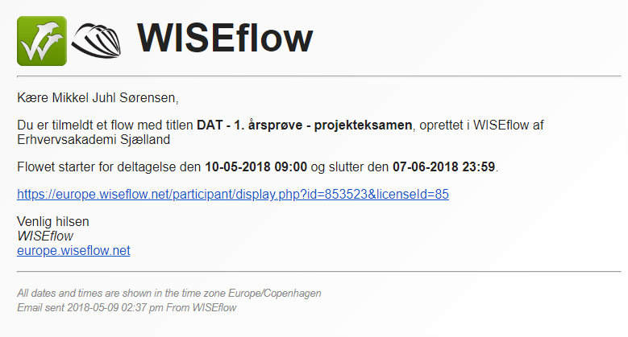

Hej!
Jeg hedder Mikkel Sørensen og velkommen til min lille hjemmeside!
Jeg er 21 år og går på datamatiker studiet på Erhversakademi Sjælland i Næstved, på 3. semester.
Denne hjemmesides primære formål er at lære hvordan man laver webdesign i HTML og styler det ved brug af CSS.
I toppen af skærmen kan du navigere dig rundt på et par faneblade, hvor jeg vil informere dig, læseren, lidt om mig selv.
Herunder vil det være muligt at læse om mine hobbier, hvilken uddannelse jeg har og hvornår, og til sidst vil der være en side,
hvor der vil være en primitiv udgave af et huskespil, som er lavet i forbindelse med en opgave på mit studie.
